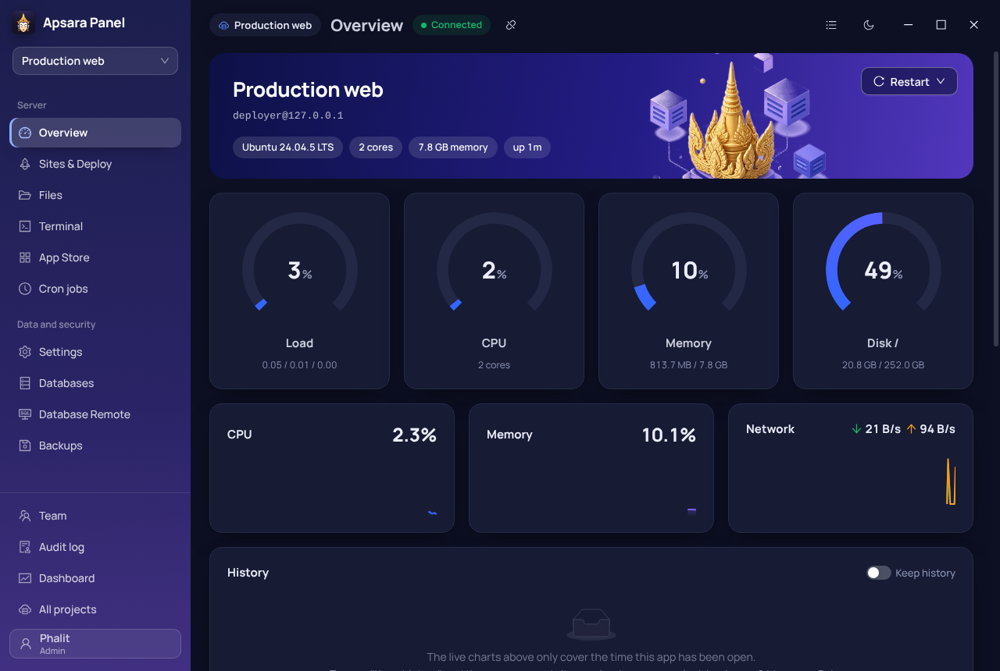
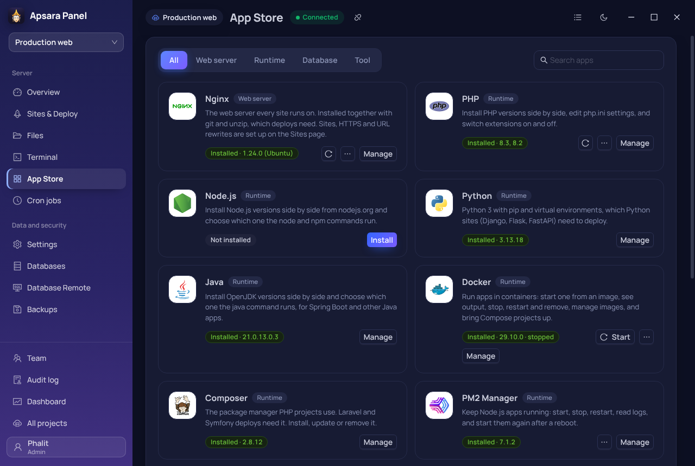
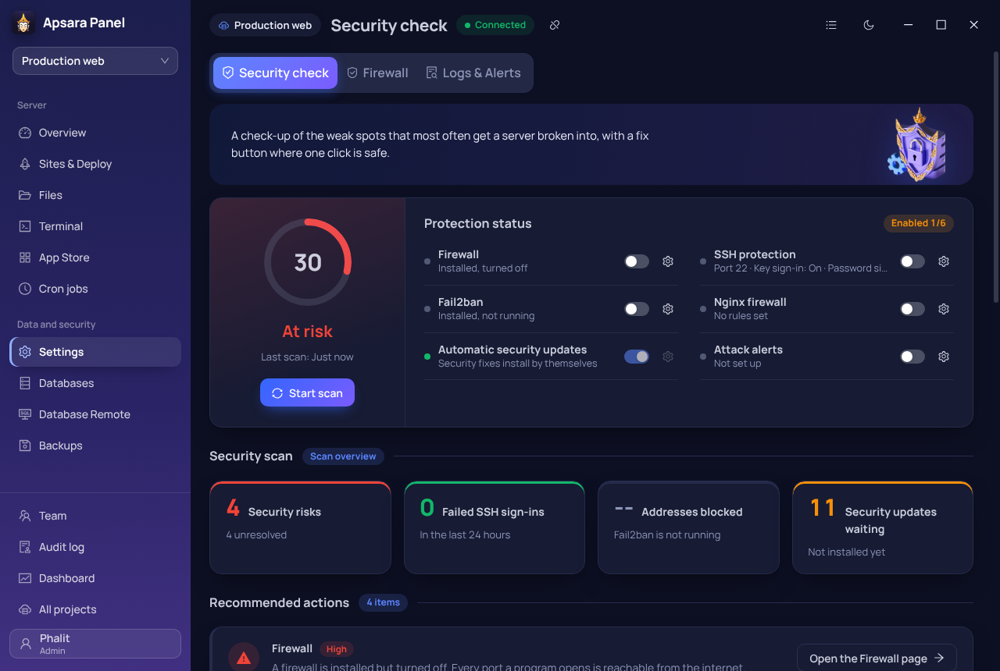
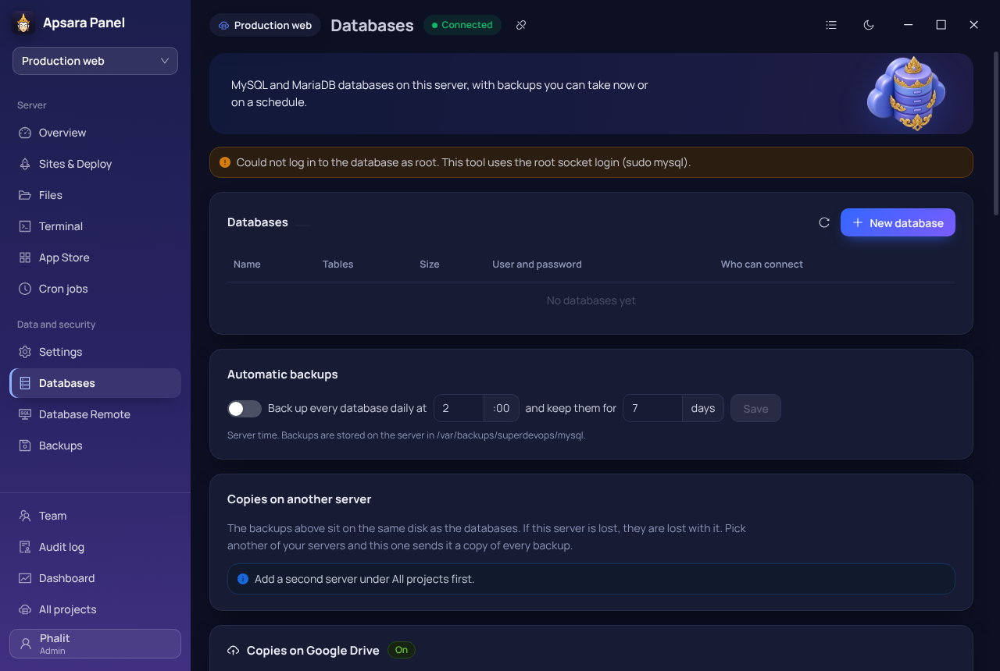

Run your Linux servers from one desktop app
Deploy sites, install what they run on, manage databases and containers, watch the load, set the firewall and back everything up. Apsara Panel does it over SSH from a team service you run yourself, so nothing has to be installed on the server first.
Version 1.0.0
What each system needs is listed under Install.

One window for the work a server needs
Each server you add gets the same set of pages. A notice names the server every time you switch, so a command never lands on the wrong one.
Sites and deploys
Deploy PHP, Node.js, Python, Java or static sites from an upload or from Git, with rollback when a new version does not answer. Several domains per site, HTTPS, URL rewriting, and stop, start or maintenance mode for one site at a time.
Reverse proxy and Nginx
Send a path such as /api to an app or another server, set upload size, compression, caching, redirects and headers in a form, and add your own directives. Nginx checks every change before it is used.
App Store
Nginx, PHP, Node.js, Python, Java, Docker, Composer, PM2, Supervisor, MySQL, MariaDB, PostgreSQL, MongoDB and Redis. Install in the version you choose, restart, and uninstall without losing data.
Databases
Create MySQL, MariaDB, PostgreSQL and MongoDB databases, each with a user of its own, and decide who may connect. Passwords are shown again only with your authenticator code. A full client for remote databases is built in.
Docker
Run a container from an image with ports, folders and variables, read its output, stop and restart it, and bring Compose projects up. Ports stay closed to the internet unless you open them.
Files and terminal
Browse, edit, upload and download files with a code editor, a trash, and copy to another server. Open as many terminals as you need, in tabs.
Security
A scored check of the usual weak spots with one-click fixes, the system firewall, an nginx firewall, Fail2ban, and a list of attacking addresses you can block.
Backups
Daily database backups and folder archives, sent by the server itself to Google Drive, to S3 storage such as Amazon S3, Cloudflare R2 or Backblaze B2, or to another server. Bring any copy back when you need it.
Monitoring and alerts
CPU, memory, disk and network live and over seven days. Telegram messages for a full disk, an attack, a site that stopped answering, or a backup that did not run, with one bot for every server.

Install what a server needs, in the version you need
The App Store asks the server what exists for its system and offers exactly that: the system's own package, or a release from the project that makes it.
- Choose the version. PostgreSQL 14 to 18, MariaDB, MySQL 8, MongoDB, Redis, PHP, Node.js and Java.
- Restart from the card. One service at a time, with the configuration checked first.
- Uninstall keeps your data. The program goes; databases, settings and backups stay for the next install.
See what is wrong before someone else finds it
The security check reads the server the way an attacker would and tells you what to fix first.
- A score with reasons. Every finding says what it is and why it matters.
- Fix now, where one click is safe. The rest opens the page that manages it.
- Never locks you out. The address you connect from cannot be blocked by mistake.


Backups that keep running when the app is closed
The server makes its own backups on a schedule you choose and sends them away from itself.
- To Google Drive or S3 storage, every hour, every few hours or once a day.
- To another of your servers, with its own limited account.
- Restore asks for your code. Bringing data back needs a fresh code from your authenticator.
Made for a team, not for one shared password
Everyone signs in as themselves, sees only the servers shared with them, and leaves a record of what they did.
Sign-in you control
A password and an authenticator code for every person, four roles, and a list of addresses that may sign in at all. Anywhere else is refused before the password is looked at.
A second person for heavy actions
Deleting or restoring a database, restarting a server, removing a site or uninstalling an app can wait until another admin approves it in their own app.
A record that holds
Every action goes to an audit log that shows when a line was changed or removed. New sign-ins and dangerous actions arrive in your Telegram chat as they happen.
Server passwords stay on one machine you control.
Your team service is the only thing that signs in to your servers. People's computers never receive a server password or key, and there is no agent to install on a server.
Your team service
A small program you run yourself. It keeps the server sign-ins encrypted, runs each person's work in a process of its own, and handles sign-in with an authenticator code, roles, approvals, alerts and a tamper-evident audit log.
Your Linux servers
They only need to accept SSH from the service, so you can close it to everyone else. Ubuntu and Debian are fully supported; other common distributions work for most pages.
Apsara Panel on each computer
macOS, Windows or Linux. It shows the work and carries the files you upload or download. Removing someone's account cuts their access at once.
Working alone, you can run the service on your own computer.
Install
Three steps from download to the first server.
Download and open
Pick the file for your system below. On macOS drag Apsara Panel into Applications; on Windows run the installer.
Start the team service
Run the service on a small server your other servers accept SSH from, or on your own computer, create the first admin, and sign in from the app.
Add a server
Enter its address and an SSH user with a password or a key. The Overview page opens as soon as it connects.
| System | Needs | 1.0.0 |
|---|---|---|
| macOS, Apple SiliconM1 and later | macOS 13 or later | Download .dmg |
| macOS, Intel | macOS 13 or later | Download .dmg |
| Windows64-bit | Windows 10 or later | Download .exe |
| Linux64-bit, AppImage | A desktop from the last few years | Download .AppImage |